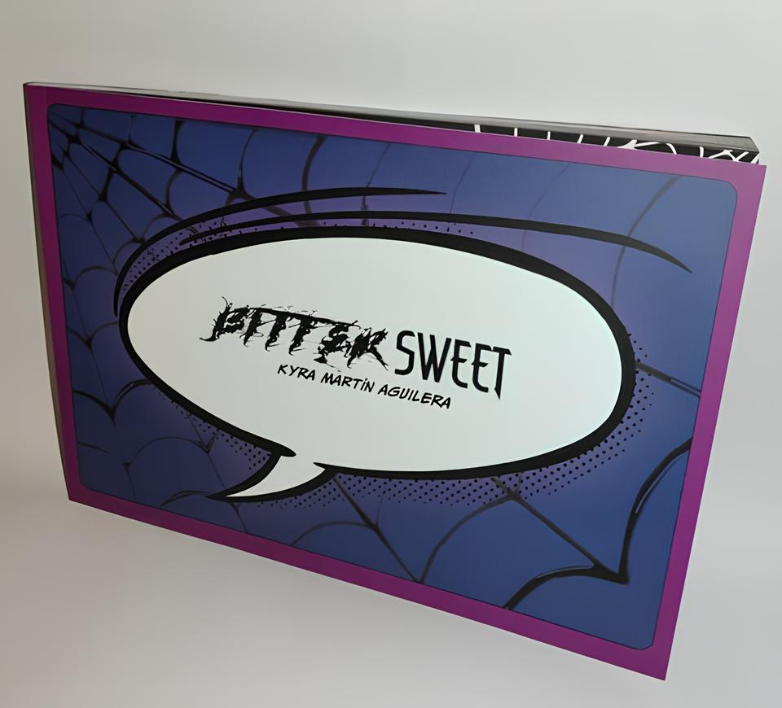
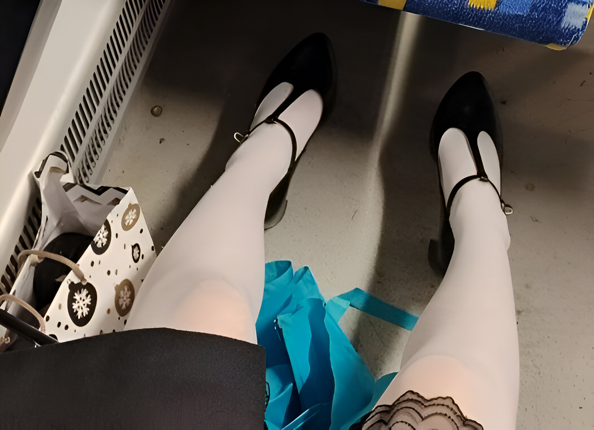

Written by Kyra Martín Aguilera on November 2, 2024
Have you ever sat down and daydreamed about something so improbable that you had to pause for a solid second in awe at the idea that just slipped out of your mind? You know, those moments when you begin whispering to yourself, "The fuck am I thinking about?"—a thought so outrageous and off-the-table that the only word that feels remotely appropriate to call yourself is "delusional"? Because trust me, I’ve been there. And, in all that glorious mental f*ckery, one question enlightened me: What sets dreams and goals apart?
What the F*ck Is a "Dream"?
Let’s take a trip back to our childhood. Back in the day, everyone had a dream. Some wanted to be astronauts, and let’s be real, a lot of us just wanted to be Spider-Man (Me? I wanted to be him and take him out for dinner too.) These childhood fantasies were what we called "dreams," yet we also use the same term for our more mundane and awfully boring adult aspirations, like buying a house. Sooooo—what exactly unites the two? What makes a dream... a dream?
Well, in everyday life, we view dreams as our big goals—things that we often want but deem impossible. That’s why today, we are going to reframe our understanding of a dream—we are going to view it as an opportunity, and we are going to replace the idea of "impossible" with a simple "what if." For example, what if that crazy dream of starting your own business isn’t so far-fetched? Remember when Pokimane's bathwater hit the market? Ever since, I've believed I could become a millionaire. And that’s the first step—believing it’s possible. Because the reason you and I ever stop chasing our dreams is simple: what we want is hidden behind our self-limiting beliefs. If we never try, we've already set ourselves up for failure. And if you don't wanna take my word for it, take it from Yoda: "Do or do not. There is no try."
See, if you ever bothered to listen in biology class, which I didn't, or had minimal interest in neuroscience, you’d know that the state in which dreams are created is what we nerdy people like to call the REM (Rapid Eye Movement) phase. To be more specific, the REM phase is a sleeping period where the brain processes memories, emotions, and unresolved thoughts, building new neural connections. In simpler terms? That’s dreaming. But why the f*ck does that even matter? Well in this dream state, we’re no longer bound by the rules, beliefs and limitations of waking life. Without the usual mental filters, we can explore possibilities we’d never consider possible when awake. And that’s what makes them dreams—they defy the limits we’ve learned to accept. So whether it’s the images we see at night or the goals we’re afraid to pursue, dreams are simply glimpses of what could be possible and very much real.
Dreams into Praxis
Now, can you become Spider-Man and climb walls? Well, technically, I used to climb the walls of my hall, and of course, my parents would come and give me one of those good Hispanic beatings because there were footprints all over the wall. But doing that made me happy, so I kept doing it regardless.
Yea I get that, but... Kyra, we are not children anymore.
You are right, we’re all grown ups, and our actions have real consequences, which makes doing anything quite scary. That carefree spirit of childhood? It’s replaced by the fear of failure. And just like my parents have rules, society has its own set of moralistic constraints, which often keep us from doing the things we truly enjoy. While I’m not saying you should disregard the law, I am asking you to think back to the old days—what are the thing you did that brought you joy? Ask yourself why you don’t do those things anymore. Go do what you love; go do what used to put a smile on that gloomy face of yours.
Although I’ll never be the real Spider-Man, I can aspire to be like him, to be a good-hearted person, and perhaps, buy a suit too. To be honest, no one can stop me from climbing the halls of my own house either. So all in all, I say I get pretty darn close to living out a dream many gave up on at the age of 9. All it really took is setting a "what if" into motion, which is why having a dream is half the work done, and probably the hardest half to overcome. Being nice, buying the suit, and climbing walls really isn’t all that hard. What’s hard is believing you’d actually climb the hall in a Spider-Man suit, right in your own damn house. You might think I’m being nonsensical, but everything I’ve said so far will eventually come together thanks to a story—one I still can't believe didn't land me in a psych ward.
And before you roll your eyes as if you’ve just had to endure a stranger’s unsolicited life advice, I get it—nobody wants to sit through a boring story. The majority of us much rather be scrolling through some mindless TikTok. But this story lives on with purpose, after all, it’s the reason my blog exists; the reason it is not yet another one of said forgotten dreams. Think of this story as the Mother Teresa of my life—my origin story. It’s yapping time!
My Origin Story
About a year ago, I experienced a breakup with a man I loved deeply. I won’t bore you with the details, but during that time, I started writing an illustrated novel—very Gen Z of me—and I even recorded and edited the full audiobook! Keep in mind, I’ve always been someone who starts projects but never finishes them. Yet, a year passed, and I kept writing my thoughts in the most creative way I knew how. Little by little, I made progress, and two months ago, I finally finished the novel. For once in my life, I felt proud of completing a project. It reminded me of the DIYs I used to create in my patio when I was six; it made me happy.

If there's one thing this project taught me, it's to challenge myself to create something I can be proud of—something I can look back on and say, "I did that. If I accomplished this, I’m capable of so much more." Appreciate the progress you've made; this alone will take you far. Because here’s the truth: consistency is NOT synonymous with routine. I’ve taken month-long breaks for other priorities, and that’s fine—life has its ups and downs. But routine doesn’t give a flying f*ck about any of that, routine is pure mechanical repetition. Consistency, on the other hand, is on and off, because what we are being consistent about is the joy we find in doing what we do. Being kinder to yourself—reminding yourself that not having a routine up your ass doesn’t mean you’ve failed—helps a lot. After all, we’re not machines, and we shouldn’t beat ourselves up for not following through with boring, lifeless repetition. As long as you go back to it, you are being consistent. See, growing up my father always used to tell me, "Do what makes you happy." So I did just that—and up until this day, I can swear it is the best advice I ever got.
Funnily enough, the story doesn’t end there. Against all logic, belief, limitations, lessons learned and my friends’ opinions, I decided to hand-deliver this novel to my ex, since the post was... how do I put it lightly... quite f*cking unreliable. I wrote a letter that never got delivered, so I asked a friend to reach out to my ex and ask for "passing-by" consent instead. I bought train tickets, and stayed at someone else’s house for the weekend. Just to clarify, I traveled halfway across Europe knowing I wouldn’t see my ex; his mom would be the one to pick up the package because he couldn’t bear to look me in the eye. I laughed, thinking he must’ve truly hated my guts while I wrote an entire book about him and I. And, I'll admit, curiosity got the best out of me. So, my sweet friend asked my ex if he hated me. His response? "I don’t hate her, but I will never interact with her again in my life."
Fast forward about a week. I’m on my period, it’s a rainy day, and I’m walking in heels toward my ex’s house. As planned, his mom picks up the package, and I leave without further ado. Depressing? Well, it turns out my ex started typing, and naturally, my friend rushed to tell me eagerly—we even began placing bets on how long it would take him to finish. My ex typed for a while… a long while (For all you curious cats out there, I won the bet! He took the whole day!). My friend and I laughed in perplexity; out of all the things I was expecting, a response wasn’t one of them, but apparently, he had read through the entire novel within the first hour of delivery! Heck! He even wrote a five-page PDF in return. Now, am I back with my ex? No, because life isn’t a Disney movie. But he did leave me with one memorable sentence: "I think at some point, I will be ready to talk to you again." He wasn’t merely suggesting it; he assured me of it. Honestly? The whole situation was so absurd, I couldn’t help but keep on laughing. And in the end, I was smiling.

Humans, am I right? Afraid little creatures of change, and very contradictory. Of course, I’m not just sitting around waiting for him to come back. Since then, I’ve learned some coding, built a discord bot, created a website, started a meme account, polished my server, and written this blog—besides meeting all the beautiful friends I have now. Listen, I started finishing every project and pursuing every dream, because dear, I fucking can and so do you.
Main Takeaway
You can achieve your dreams, just like anyone else. Many people thought I was actually fucking delusional, crazy, and plainly not in my right mind. Did that stop me? Well, no, it did not—if it wasn’t obvious by now. All it takes is shining a little bit of action on that dream and silence any voice that says, "That’s ridiculous." Because it’s not. Do what makes you feel like yourself, regardless of what anyone thinks. Be you. I love you all.
And hey, if you can't climb walls in a Spider-Man suit, at least climb towards your dreams. They’re both a little crazy, but who said that’s a bad thing?
My brain’s completely f*cked, and trust me, I don’t need drugs to make it worse. I’ve f*cked up and laughed about it—now you get to listen to it. Welcome to the podcast where I’m reading my blogs out loud.
Too lazy to read? I get it. Skip the effort and let me do the talking. Latest episodes? Check. Random rants and probably some questionable advice? Double-check. Hit play and let's make this worth your time.